Ví dụ sau minh họa framework DBIx::Class của Perl:
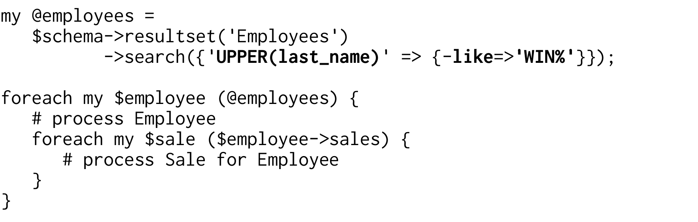
DBIx::Class 0.08192 generate các query select N+1:
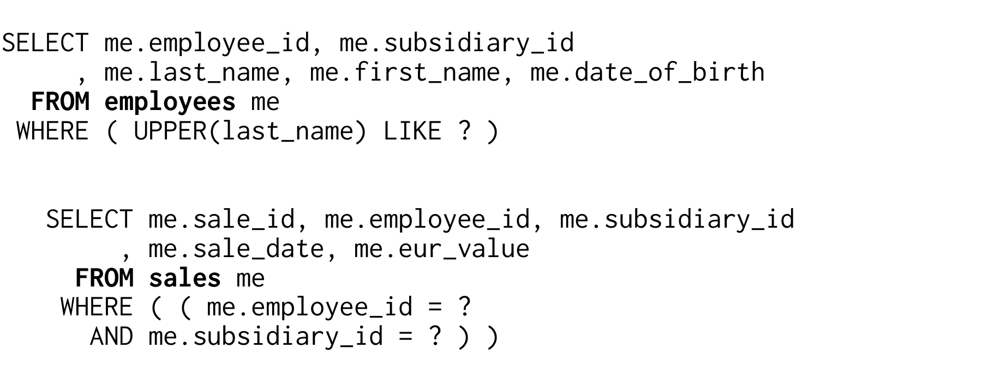
Ví dụ Doctrine dùng interface query builder:
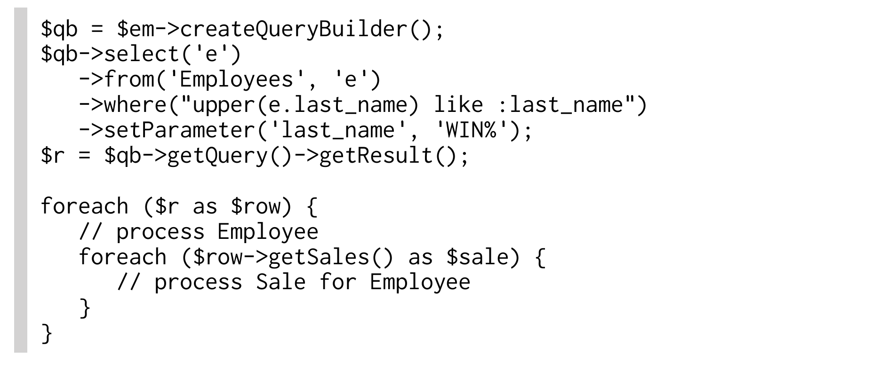
Doctrine 2.0.5 generate các query select N+1:
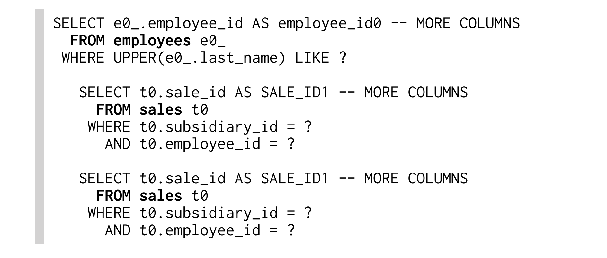
Bật SQL logging trong quá trình development và review các SQL statement được generate.
Chỉ thực hiện ở source code level — đừng quên disable setting này trong production. Hãy cân nhắc việc tự xây dựng một configurable logger.
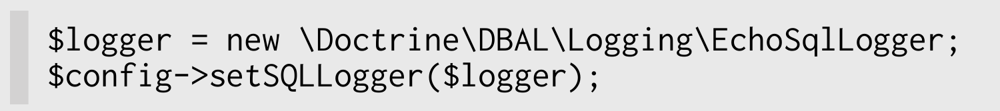
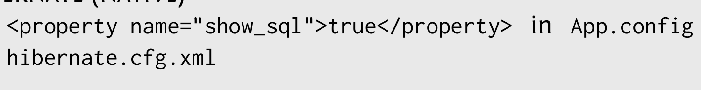
Trong persistence.xml, nhưng còn tùy JPA provider:
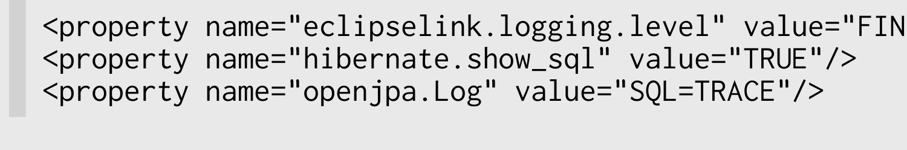
Hầu hết ORM cũng cung cấp cách programmatic để enable SQL logging. Cách này có rủi ro vô tình deploy setting đó lên production.
Dù cách tiếp cận “nested selects” là một anti-pattern, nó vẫn giải thích khá rõ nested loops join. Database thực thi join chính xác như các ORM tool ở trên. Vì vậy, indexing cho nested loops join cũng giống như indexing cho các select statement đã trình bày ở trên. Đó là function-based index trên table EMPLOYEES và concatenated index cho các join predicate trên table SALES:
SQL join vẫn hiệu quả hơn cách tiếp cận nested selects — dù thực hiện cùng các index lookup — vì nó tránh được nhiều network communication. Nó thậm chí còn nhanh hơn khi tổng lượng data truyền đi lớn hơn do employee attribute bị lặp lại cho mỗi sale. Đó là vì performance có hai dimension: response time và throughput; trong computer network, chúng ta gọi chúng là latency và bandwidth. Bandwidth chỉ tác động nhỏ đến response time, còn latency có tác động rất lớn. Vì vậy, số database round trip quan trọng đối với response time hơn lượng data được truyền.
Hầu hết ORM tool đều có cách tạo SQL join. Chế độ gọi là eager fetching có lẽ là cách quan trọng nhất. Nó thường được cấu hình ở property level trong entity mapping — ví dụ property employees trong class Sales. Khi đó ORM tool sẽ luôn join table EMPLOYEES khi access table SALES. Cấu hình eager fetching trong entity mapping chỉ hợp lý nếu lúc nào bạn cũng cần employee detail cùng với sales data.
Eager fetching phản tác dụng nếu bạn không cần child record mỗi lần access parent object. Với application dạng telephone directory, load record SALES khi hiển thị employee detail là không hợp lý. Bạn có thể cần sales data liên quan trong những trường hợp khác — nhưng không phải lúc nào cũng cần. Static configuration không giải quyết được vấn đề.
Để đạt performance tối ưu, bạn cần toàn quyền kiểm soát join. Các ví dụ sau cho thấy cách có được mức flexibility cao nhất bằng cách kiểm soát join behavior tại runtime.
Interface JPA CriteriaBuilder cung cấp method Root<>.fetch() để kiểm soát join. Method này cho phép bạn chỉ định thời điểm và cách join các object được tham chiếu vào main query. Trong ví dụ này, chúng ta dùng left join để lấy tất cả employee, kể cả những employee không có sale.
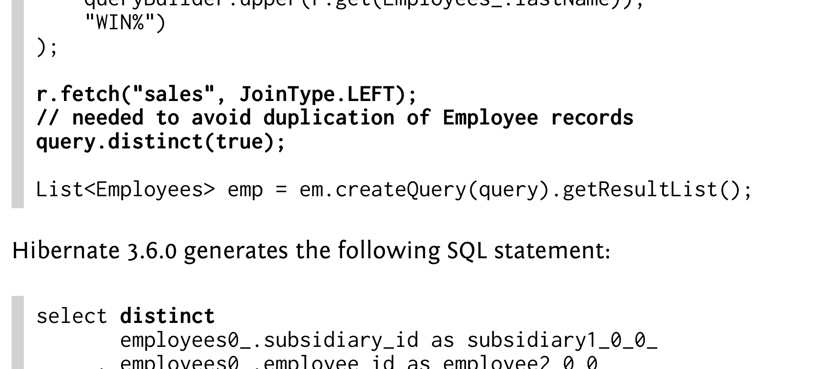
Hibernate 3.6.0 generate SQL statement sau:
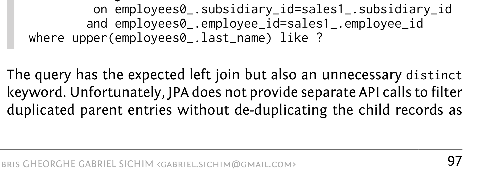
Query có left join như kỳ vọng nhưng cũng có keyword distinct không cần thiết. Đáng tiếc là JPA không cung cấp API call riêng để filter các parent entry bị duplicate mà không de-duplicate cả child record
tương tự.
Keyword distinct trong SQL query đáng lo vì hầu hết database sẽ thực sự filter các duplicate record. Chỉ một số ít database nhận biết rằng primary key vốn đã bảo đảm tính unique trong trường hợp này.
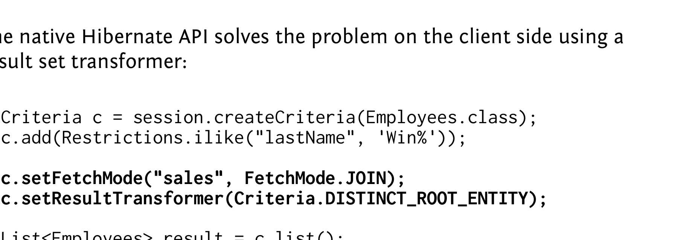
Nó generate query sau:
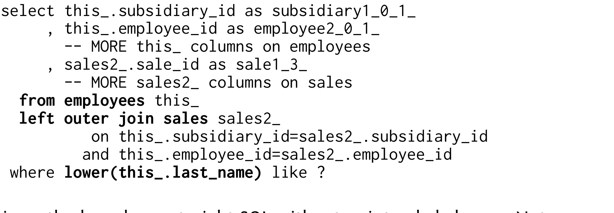
Method này tạo ra SQL trực tiếp mà không có clause ngoài ý muốn. Lưu ý rằng Hibernate dùng lower() cho case-insensitive query — một chi tiết quan trọng đối với function-based indexing.
Ví dụ sau dùng framework DBIx::Class của Perl:
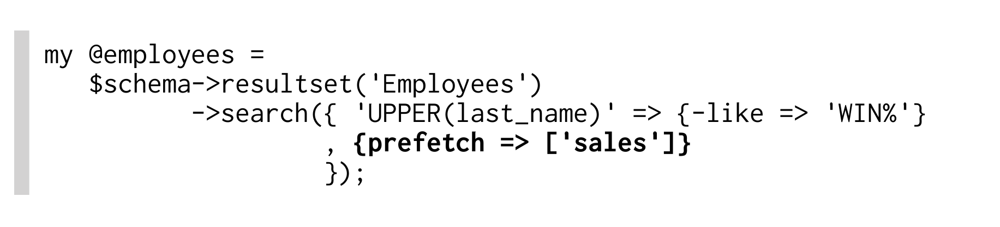
DBIx::Class 0.08192 generate SQL statement sau:
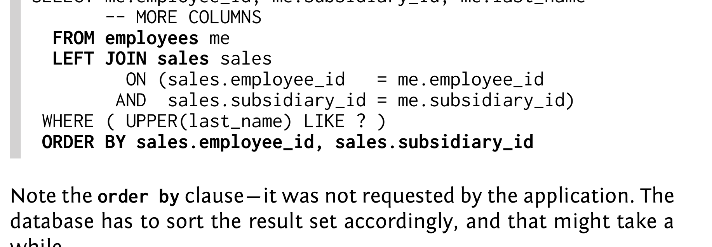
Ví dụ sau dùng framework Doctrine của PHP:
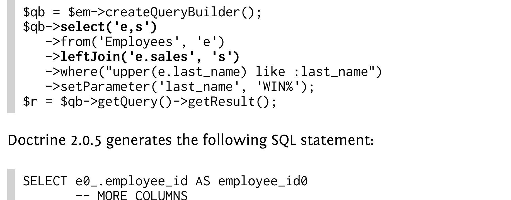
Doctrine 2.0.5 generate SQL statement sau:
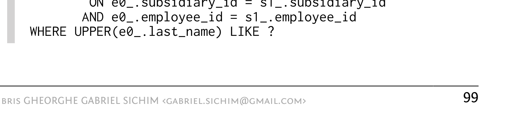
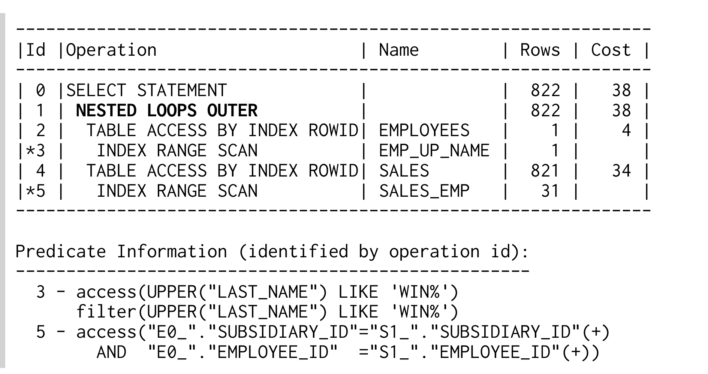
Database trước tiên lấy result từ table EMPLOYEES thông qua EMP_UP_NAME, sau đó fetch các record tương ứng từ table SALES cho từng employee.
Nested loops join cho performance tốt nếu driving query trả về một result set nhỏ. Nếu không, optimizer có thể chọn một join algorithm hoàn toàn khác — chẳng hạn hash join được mô tả trong section tiếp theo, nhưng chỉ khi application dùng join để nói cho database biết chính xác cần data nào.
Hash join algorithm nhắm vào điểm yếu của nested loops join: nhiều lần B-tree traversal khi execute inner query. Thay vào đó, nó load các candidate record từ một phía của join vào hash table, để mỗi row từ phía còn lại có thể probe rất nhanh. Tuning hash join đòi hỏi indexing approach hoàn toàn khác nested loops join. Ngoài ra, có thể cải thiện performance của hash join bằng cách select ít column hơn — một thách thức đối với hầu hết ORM tool.
Indexing strategy cho hash join rất khác vì không cần index các join column. Chỉ index cho các independent where predicate mới cải thiện performance của hash join.
Xét ví dụ sau. Nó select toàn bộ sale trong sáu tháng vừa qua cùng employee detail tương ứng:
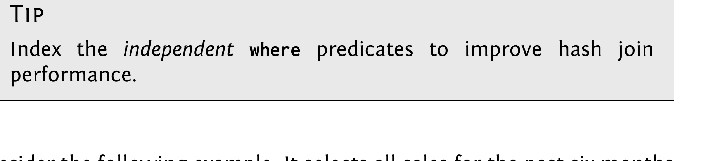
Filter SALE_DATE là where clause độc lập duy nhất — nghĩa là nó chỉ tham chiếu đến một table và không thuộc join predicate.
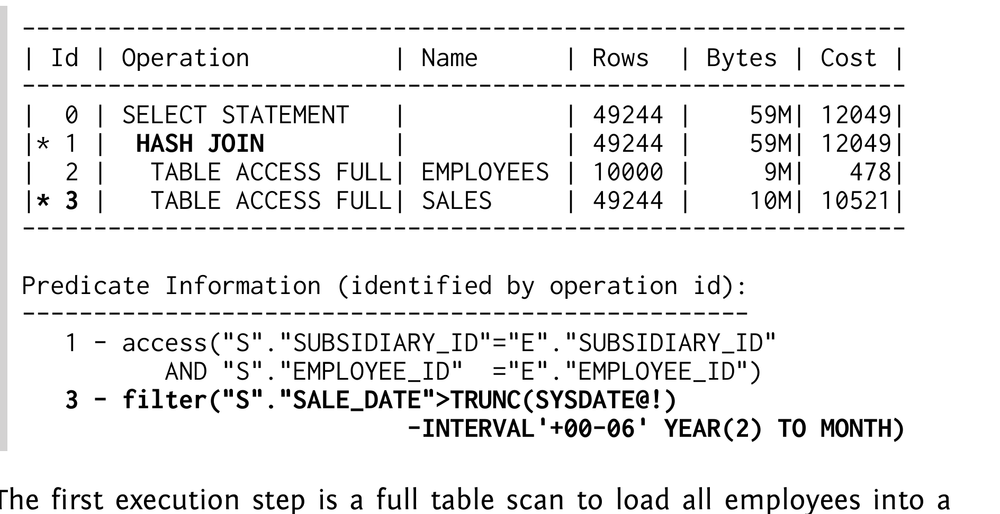
Bước thực thi đầu tiên là full table scan để load toàn bộ employee vào hash table (plan id 2). Hash table dùng join predicate làm key. Ở bước tiếp theo, database lại full table scan table SALES và loại bỏ các sale không thỏa điều kiện SALE_DATE (plan id 3). Với những SALES record còn lại, database access hash table để load employee detail tương ứng.
Mục đích duy nhất của hash table là làm temporary in-memory structure để tránh access table EMPLOYEE nhiều lần. Hash table được load một lần nên không cần index để fetch từng record hiệu quả. Predicate information xác nhận không có filter nào được áp dụng trên table EMPLOYEES (plan id 2). Query không có independent predicate nào trên table này.
Điều đó không có nghĩa là không thể index hash join. Independent predicate có thể được index. Đây là các condition được áp dụng trong một trong hai table access operation. Trong ví dụ trên, đó là filter trên SALE_DATE.
Execution plan sau dùng index này. Tuy nhiên, nó vẫn dùng full table scan cho table EMPLOYEES vì query không có independent where predicate trên EMPLOYEES.
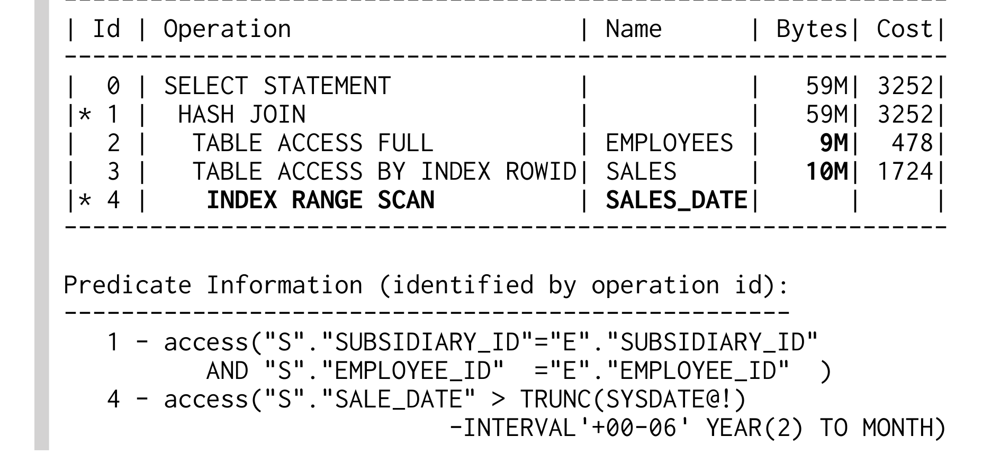
Indexing hash join là symmetric — trái ngược với nested loops join. Nghĩa là join order không ảnh hưởng đến indexing. Index SALES_DATE vẫn có thể được dùng để load hash table nếu đảo ngược join order.
Một approach khá khác để tối ưu hash join performance là minimize kích thước hash table. Cách này hiệu quả vì hash join tối ưu chỉ có thể xảy ra khi toàn bộ hash table vừa trong memory. Vì vậy optimizer sẽ tự động dùng phía nhỏ hơn của join làm hash table. Oracle execution plan hiển thị memory requirement được estimate trong column “Bytes”. Trong execution plan ở trên, table EMPLOYEES cần chín megabyte nên là phía nhỏ hơn.
Cũng có thể giảm kích thước hash table bằng cách thay đổi SQL query, chẳng hạn thêm condition để database load ít candidate record hơn vào hash table. Tiếp tục ví dụ trên, điều đó có nghĩa thêm filter trên attribute DEPARTMENT để chỉ xét sales staff. Cách này cải thiện hash join performance ngay cả khi không có index trên attribute DEPARTMENT, vì database không cần lưu những employee không thể có sale vào hash table. Khi làm vậy, bạn phải chắc chắn không có SALES record nào thuộc employee không làm việc trong department tương ứng. Hãy dùng constraint để bảo vệ các assumption.
Khi minimize kích thước hash table, factor quan trọng không phải số row mà là memory footprint. Thực tế, cũng có thể giảm kích thước hash table bằng cách select ít column hơn — chỉ những attribute thực sự cần:
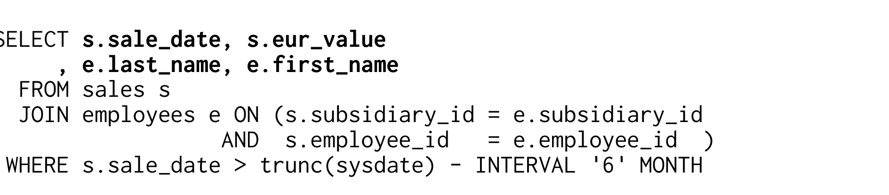
Cách này hiếm khi tạo bug vì bỏ nhầm column có lẽ sẽ nhanh chóng dẫn đến error message. Tuy nhiên, vẫn có thể cắt giảm đáng kể kích thước hash table; trong trường hợp này từ 9 megabyte xuống 234 kilobytes — giảm 97%.
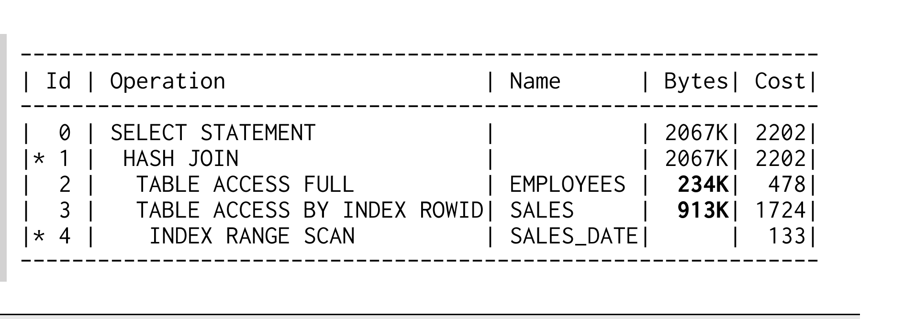
Thoạt nhìn, việc bỏ vài column khỏi SQL statement có vẻ đơn giản, nhưng đây là thách thức thực sự khi dùng object-relational mapping (ORM) tool. Support cho cái gọi là partial object rất hạn chế. Các ví dụ sau cho thấy một số khả năng.
JPA định nghĩa FetchType.LAZY trong annotation @Basic. Nó có thể được áp dụng ở property level:
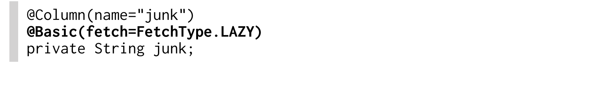
JPA provider được tự do ignore nó:
LAZY strategy là một hint cho persistence provider runtime rằng data nên được fetch lazily khi lần đầu được access. Implementation được phép eagerly fetch data mà LAZY strategy hint đã được chỉ định.
—EJB 3.0 JPA, paragraph 9.1.18
Hibernate 3.6 implement lazy property fetching thông qua compile-time bytecode instrumentation. Instrumentation thêm code vào các compiled class và không fetch LAZY property cho đến khi property được access. Approach này hoàn toàn transparent với application, nhưng mở ra một dimension mới của N+1 problem: một select cho mỗi record và property. Điều này đặc biệt nguy hiểm vì JPA không cung cấp runtime control để eager fetch khi cần.
Native query language HQL của Hibernate giải quyết vấn đề bằng clause FETCH ALL PROPERTIES:
Clause FETCH ALL PROPERTIES buộc Hibernate eager fetch entity — ngay cả khi dùng instrumented code và LAZY annotation.
Một option khác để chỉ load các column được chọn là dùng data transport object (DTO) thay cho entity. Method này hoạt động giống nhau trong HQL và JPQL, tức là initialize một object ngay trong query:
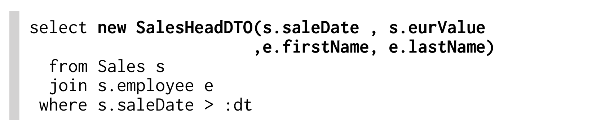
Query chỉ select data được yêu cầu và trả về object SalesHeadDTO — một Java object đơn giản (POJO), không phải entity.
Framework DBIx::Class không đóng vai trò entity manager nên inheritance không gây ra vấn đề aliasing.¹ Cookbook hỗ trợ approach này. Schema definition sau định nghĩa class Sales ở hai level:
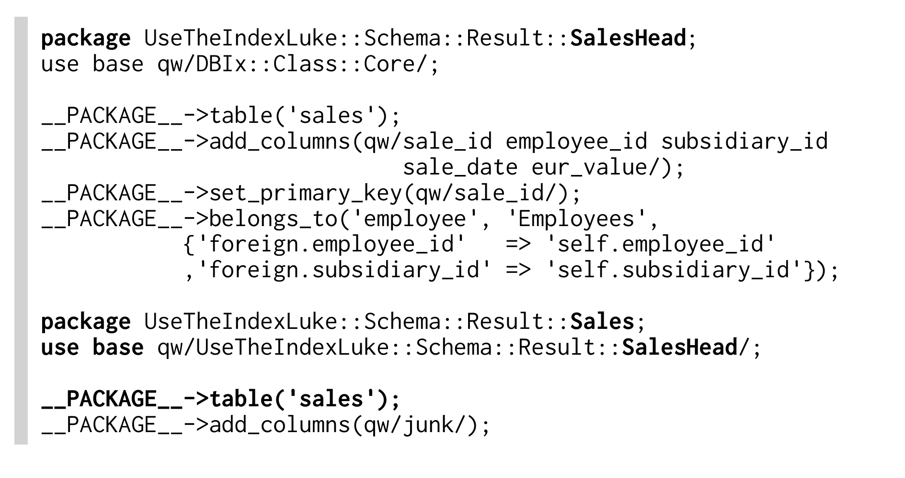
Class Sales được derived từ class SalesHead và bổ sung attribute còn thiếu. Bạn có thể dùng cả hai class tùy nhu cầu. Lưu ý rằng table setup cũng bắt buộc phải có trong derived class.
Bạn có thể fetch toàn bộ employee detail bằng prefetch hoặc chỉ các column được chọn như dưới đây:
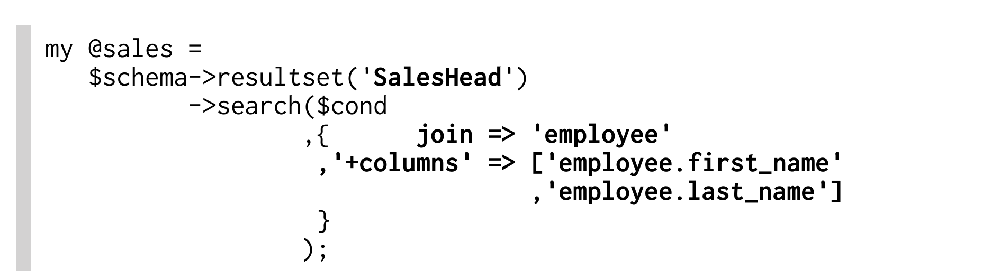
Không thể chỉ load các column được chọn từ root table — trong trường hợp này là SalesHead.
1
http://en.wikipedia.org/wiki/Aliasing_%28computing%29
DBIx::Class 0.08192 generate SQL sau. Nó fetch toàn bộ column từ table SALES và các attribute được chọn từ EMPLOYEES:
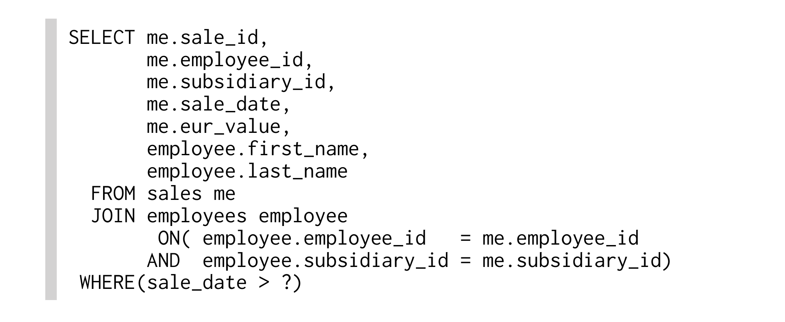
Version 2 của framework Doctrine hỗ trợ attribute selection tại runtime. Documentation nói rằng partially loaded object có thể behave oddly và yêu cầu dùng keyword partial để acknowledge risk. Ngoài ra, bạn phải select rõ các primary key column:
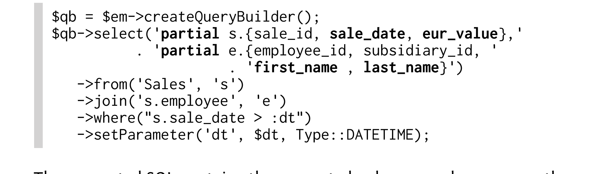
SQL được generate chứa các column được yêu cầu và một lần nữa có SUBSIDIARY_ID cùng EMPLOYEE_ID từ table SALES.
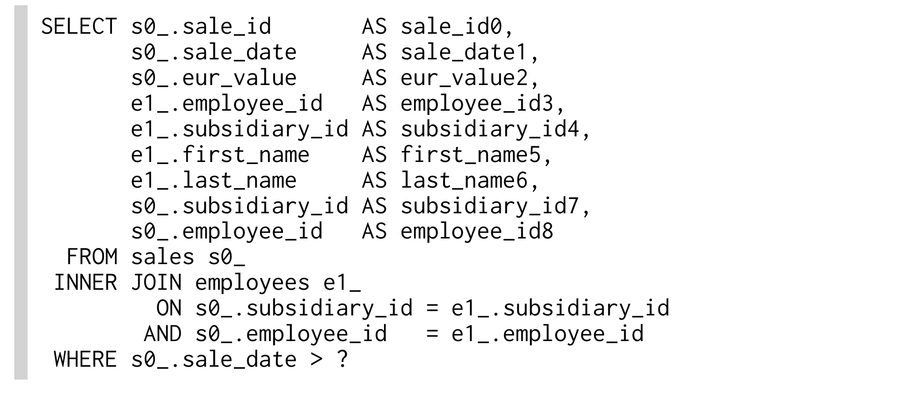
Các object được trả về tương thích với object đã load đầy đủ, nhưng các column thiếu vẫn ở trạng thái chưa initialize. Access chúng không trigger exception.
Sort-merge join kết hợp hai sorted list giống như một zipper. Cả hai phía của join đều phải được sort theo join predicate.
Sort-merge join cần cùng loại index như hash join, tức là index cho các independent condition để đọc toàn bộ candidate record trong một lần.
Indexing join predicate là vô ích. Cho đến đây, mọi thứ giống hash join. Tuy nhiên, sort-merge join có một đặc tính riêng: symmetry tuyệt đối. Join order không tạo khác biệt — kể cả về performance. Tính chất này đặc biệt hữu ích cho outer join. Với các algorithm khác, hướng của outer join (left hay right) quyết định join order — nhưng không phải với sort-merge join. Sort-merge join thậm chí có thể thực hiện left và right outer join cùng lúc — cái gọi là full outer join.
Dù sort-merge join hoạt động rất tốt khi input đã được sort, nó hiếm khi được dùng vì sort cả hai phía rất tốn kém. Ngược lại, hash join chỉ cần preprocess một phía.
Điểm mạnh của sort-merge join xuất hiện khi input đã được sort sẵn. Có thể đạt điều này bằng cách khai thác thứ tự của index để tránh hoàn toàn các sort operation. Chapter 6, “Sorting and Grouping”, giải thích chi tiết concept này.
Dù vậy, hash join algorithm vẫn vượt trội trong nhiều trường hợp.
Thuật ngữ cluster được dùng trong nhiều lĩnh vực. Chẳng hạn, star cluster là một nhóm ngôi sao. Computer cluster lại là một nhóm computer làm việc chặt chẽ với nhau — để giải quyết một bài toán phức tạp (high-performance computing cluster) hoặc tăng availability (failover cluster). Nói chung, cluster là những thứ có liên quan và xuất hiện cùng nhau.
Trong computing còn có một loại cluster khác — loại thường bị hiểu sai: data cluster. Clustering data nghĩa là lưu những data được access liên tiếp ở gần nhau để việc access cần ít IO operation hơn. Data cluster rất quan trọng đối với database tuning. Computer cluster cũng rất phổ biến trong ngữ cảnh database — khiến thuật ngữ cluster trở nên mơ hồ. Câu “Let’s use a cluster to improve database performance” là một ví dụ; nó có thể nói đến computer cluster nhưng cũng có thể nghĩa là data cluster. Trong chapter này, cluster nói chung sẽ chỉ data cluster.
Data cluster đơn giản nhất trong SQL database là row. Database lưu tất cả column của một row trong cùng database block nếu có thể. Có ngoại lệ nếu row không vừa trong một block — ví dụ khi có LOB type.
Các database dạng column-oriented, hay column-store, tổ chức table theo column. Model này có lợi khi access nhiều row nhưng chỉ một vài column — một pattern rất phổ biến trong data warehouse (OLAP).
Index cho phép cluster data. Cơ sở của điều này đã được giải thích trong Chapter 1, “Anatomy of an Index”: index leaf node lưu indexed column theo thứ tự, nên các value tương tự được lưu cạnh nhau. Điều đó có nghĩa index xây dựng các cluster gồm những row có value tương tự.
Khả năng cluster data quan trọng đến mức tôi gọi nó là power thứ hai của indexing.
Các section sau giải thích cách dùng index để cluster data và cải thiện query performance.
Rất thường xuyên, index filter predicate cho thấy index được dùng không đúng do column order sai trong concatenated index. Tuy nhiên, index filter predicate cũng có thể được dùng có chủ đích — không phải để cải thiện range scan performance mà để nhóm những data được access liên tiếp lại với nhau.
Các predicate trong where clause không thể làm access predicate là candidate tốt cho kỹ thuật này:
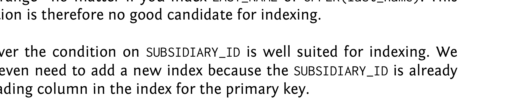
Hãy nhớ rằng LIKE expression có wildcard ở đầu không thể dùng index tree. Nghĩa là indexing LAST_NAME không thu hẹp index range được scan — bất kể bạn index LAST_NAME hay UPPER(last_name). Vì vậy condition này không phải candidate tốt để indexing.
Tuy nhiên, condition trên SUBSIDIARY_ID rất phù hợp để indexing. Chúng ta thậm chí không cần thêm index mới vì SUBSIDIARY_ID đã là leading column trong index của primary key.
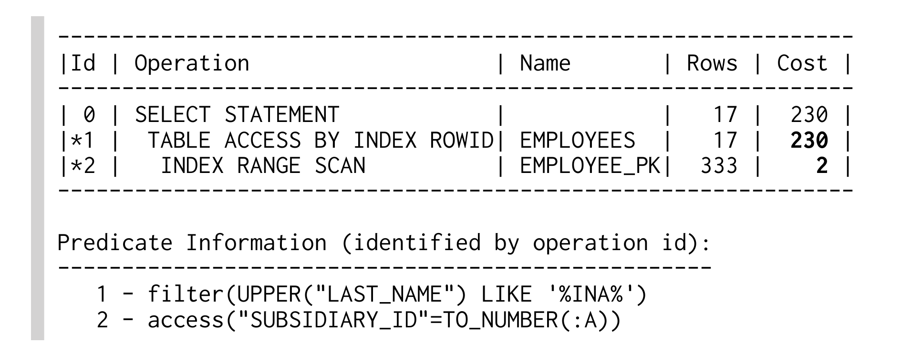
Trong execution plan ở trên, cost value tăng một trăm lần từ INDEX RANGE SCAN đến TABLE ACCESS BY INDEX ROWID tiếp theo. Nói cách khác, table access thực hiện phần lớn công việc. Đây thực sự là pattern phổ biến và bản thân nó không phải vấn đề. Tuy nhiên, nó là contributor đáng kể nhất vào overall execution time của query này.
Table access không nhất thiết là bottleneck nếu các row được access nằm trong một table block, vì database có thể fetch toàn bộ row bằng một read operation. Ngược lại, nếu các row đó nằm rải rác trong nhiều block, table access có thể trở thành performance problem nghiêm trọng vì database phải fetch nhiều block để lấy toàn bộ row. Nghĩa là performance phụ thuộc vào physical distribution của các row — nói cách khác, phụ thuộc vào clustering của row.
Thực tế có thể cải thiện query performance bằng cách sắp xếp lại row trong table để chúng tương ứng với index order. Tuy nhiên, method này hiếm khi áp dụng được vì bạn chỉ có thể lưu table row theo một sequence. Nghĩa là bạn chỉ có thể optimize table cho một index. Ngay cả khi chọn được một index duy nhất để optimize table, đây vẫn là task khó vì hầu hết database chỉ cung cấp tool rất sơ sài cho việc này. Cái gọi là row sequencing rốt cuộc là một approach khá không thực tế.
Index clustering factor là indirect measure của xác suất hai index entry liên tiếp tham chiếu đến cùng một table block. Optimizer tính đến xác suất này khi tính cost value của operation TABLE ACCESS BY INDEX ROWID.
Đây chính là nơi power thứ hai của indexing — clustering data — phát huy tác dụng. Bạn có thể thêm nhiều column vào index để chúng tự động được lưu theo một order được xác định rõ. Điều đó biến index thành một tool mạnh nhưng đơn giản để cluster data.
Để áp dụng concept này vào query ở trên, chúng ta phải mở rộng index để cover toàn bộ column trong where clause — kể cả những column không thu hẹp index range được scan:
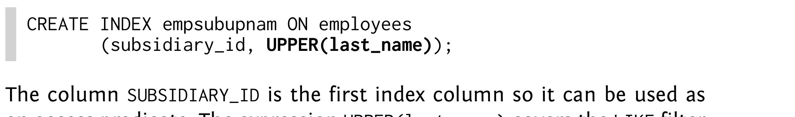
Column SUBSIDIARY_ID là index column đầu tiên nên có thể được dùng làm access predicate. Expression UPPER(last_name) cover LIKE filter dưới dạng index filter predicate. Index biểu diễn uppercase giúp tiết kiệm một vài CPU cycle trong quá trình execute, nhưng index thông thường trên LAST_NAME cũng hoạt động. Bạn sẽ tìm hiểu thêm về điều này trong section tiếp theo.
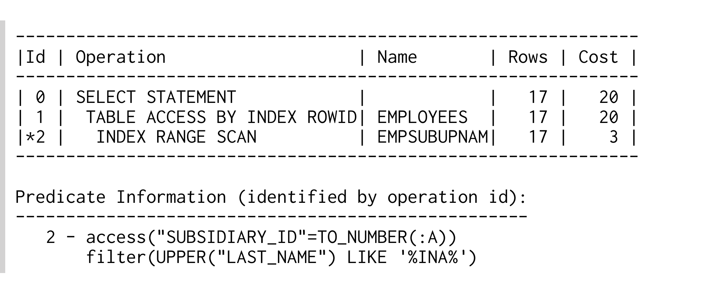
Execution plan mới hiển thị chính các operation như trước. Dù vậy, cost value đã giảm đáng kể. Trong predicate information, chúng ta thấy LIKE filter đã được áp dụng ngay trong INDEX RANGE SCAN. Các row không thỏa LIKE filter bị loại ngay lập tức. Table access không còn filter predicate nào nữa. Nghĩa là nó không load những row không thỏa where clause.